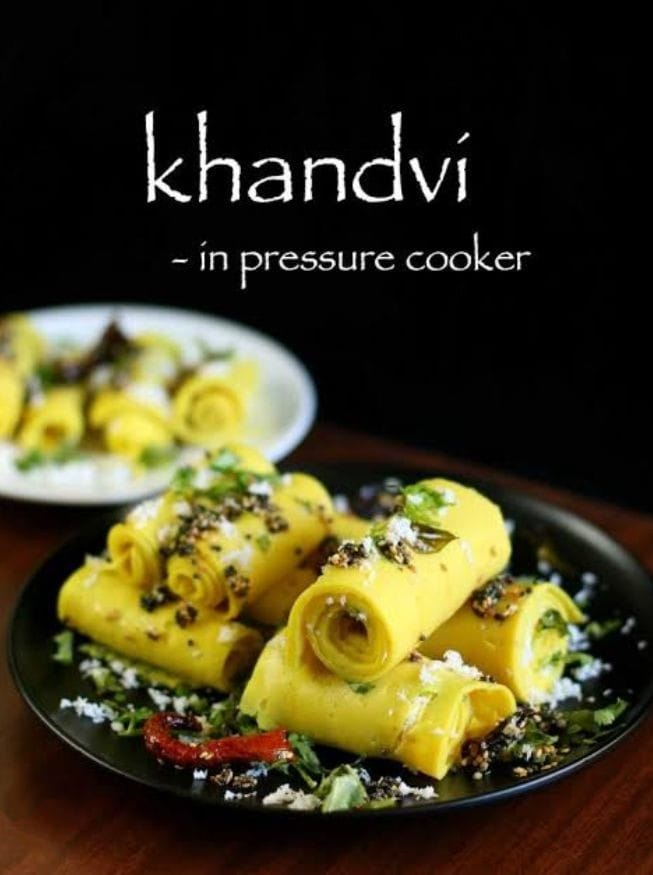

Gujarati Patudi : Recipe, Ingredients, Tips and Pairing Ideas

Khandvi recipe is a guilt free Indian snack famous in Gujarat, Maharashtra prepared with gram flour and curd. With full video and step by step pictures.
STEPWISE PHOTOS
-
Take besan, curd, water, salt and asafoetida (turmeric also if adding) in a heavy bottomed pan. Using a whisk, beat it smoothly. Heat this in medium flame with constant stirring.
-
Make sure you stir well until bottom as the bottom of the batter gets thickened faster. Stir until the mixture thickens and gets cooked. It must not be too thick, just like a paste that will be easy to spread. Do not let it over cooked, otherwise you may not be able to spread.
-
Keep ready – clean counter top or a cutting board smooth and plain as I have used as shown in the picture. You also need a spatula to spread the mixture. If you are not comfortable using counter top as such, u can use aluminium foil over the counter top.
-
Act quickly, transfer the batter to the counter top. If you have more batter, do it in two or three places. I used very less, so needed only one plastic cutting board. So I spread the batter thinly using the spatula. Let it cool down completely.
-
Draw lines with a knife into strips. Trim the edges. I divided the strips into two and gently rolled into khandvis.
-
Lastly arrange it in a tray and temper with the mustard, asafoetida and spread it over the khandvis. Garnish with coriander and grated fresh coconut.
Serve it with lots of fresh grated coconut garnished along with Green chutney as side dish/ Dip. Perfect tea time snack for your family too.